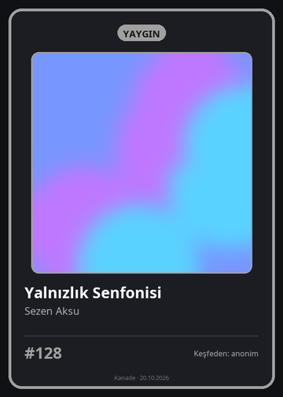
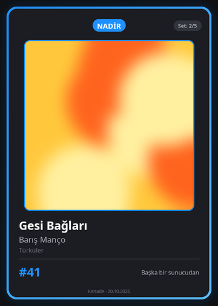
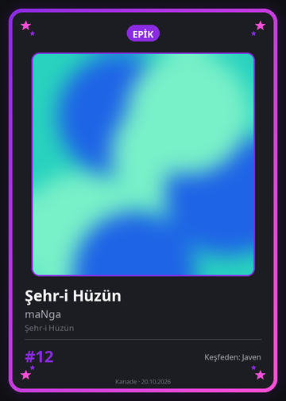
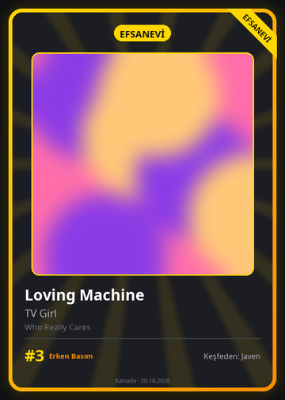
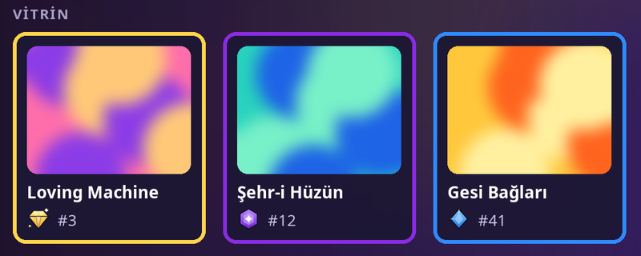
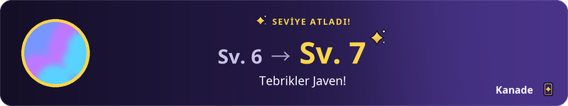
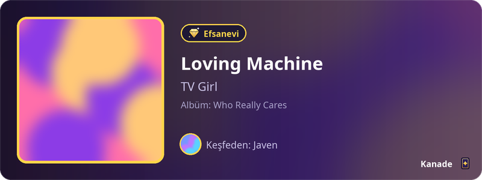
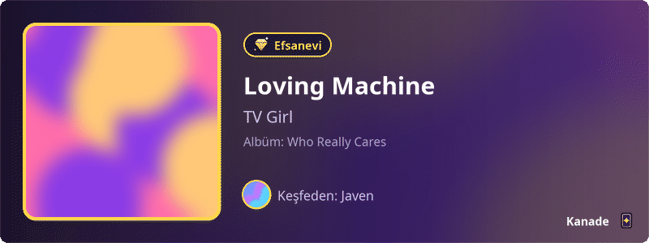
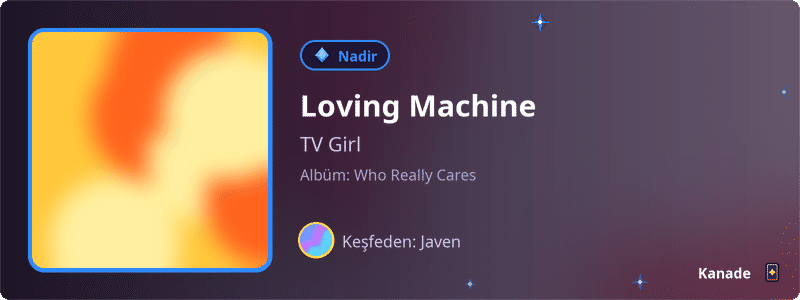

Özellikler
Müzik zevkin, kart kart
Her kart bir şarkıdır ve görseli bot tarafından o an çizilir. Aşağıdaki örneklerde albüm kapakları yerine renkli yer tutucular var.
 Kartlar ve kademeler
Kartlar ve kademeler
Her şarkı bir kart
Kutudan çıkan her kart bir şarkıdır: kapak, şarkı adı, sanatçı ve albüm. Kartın kademesi basıldığı anda belirlenir ve hiç değişmez.
- Basım no: o şarkıdan kaçıncı kartın sende olduğu. #1 ilk basımdır; ilk 10 basım "Erken Basım" olarak işaretlenir. Numaralar hiç yeniden kullanılmaz.
- Keşfeden: şarkıyı sunucuda ilk dinleyen oyuncu kartında görünür.
/kart gösterkartını sohbette görsel olarak paylaşır,/kart bilgibasım, kademe ve set bilgisini verir.




Dört kademe, açık oranlar
Her kutudan Yaygın, Nadir, Epik ya da Efsanevi bir kart çıkar. Oranlar ve sana özel sayaçlar /oranlar'da her zaman yazar.
Pity (garanti): şanssızlık sonsuza kadar sürmez. Üst üste 10 kutuda Epik veya üstü, 45 kutuda Efsanevi kesin çıkar.
Yeni oyuncunun ilk kutusu en az Nadir; /günlük serisinin her 7. gününde Epik+ garantili bir kutu gelir.
 Setler ve vitrin
Setler ve vitrin
Albümleri tamamla, en iyilerini sergile
Katalogda en az 3 şarkısı olan her albüm bir settir. Hepsini toplayınca şarkı başına 30 Plak ödül ve kalıcı bir rozet alırsın; ilerlemen /setler'de. Set sonradan büyürse yeni şarkılarla yeniden tamamlayabilirsin.
Profil kartındaki vitrinde 3 yuva var: /kart vitrin ile en sevdiğin kartları koy. Boş bıraktığın yuvalar en değerli kartlarınla dolar.

 Profil kartı
Profil kartı
Sana ait bir kart
/profil seviyeni, XP çubuğunu, serini, biyografini, kart ve set sayını ve kademelere göre koleksiyonunu tek görselde gösterir. Arka planı vitrindeki ilk kartının kapağından gelir.
/biyografiile en fazla 100 karakterlik bir söz ekle.- Müzik zevki: en çok dinlediğin 3 sanatçı profilinde görünür. Varsayılan kapalıdır;
/gizlilik müzik-zevkiile açarsın. - Sohbet ettikçe ve dinledikçe XP kazanırsın; seviye atladığında kısa bir kutlama kartı gelir.


 Kendi dinlediklerin
Kendi dinlediklerin
Kutudan kendi şarkıların çıkar
Kutudaki kartın yaklaşık %25'i senin bu sunucuda dinlediğin ve henüz sahip olmadığın şarkılardan, %50'si sunucunun havuzundan, %25'i diğer sunuculardan gelir.
Kendi payın, dinlediğin şarkılar 40 karta ulaşana kadar yavaş yavaş büyür. Bunun için oyuna /başla ile katılmış ve takibi açık olmalısın; /oranlar kendi payının şu anki durumunu gösterir.
Bir şarkıyı sunucuda ilk dinleyen sen olursan kartında "Keşfeden" olarak adın yazar.


/rastgele
Sunucunun keşifleri
Sunucunda keşfedilmiş rastgele bir şarkı önerir: şarkı, sanatçı, albüm, kademe ve onu kimin keşfettiği. Oyuna katılmayan üyelerin dinlediği şarkılar isimsiz görünür.
Nadir ve üstü şarkılar hareketli gelir: kademe renginde parıltı ya da yıldızlar.


 Parçalama ve üretim
Parçalama ve üretim
Kopyalar boşa gitmez
Her kutu ayrıca Parça verir; çıkan kart ne kadar nadirse o kadar fazla: Yaygın'da 2, Efsanevi'de 12. Zaten sahip olduğun bir kart çıkarsa kopya da otomatik olarak Parça'ya dönüşür.
/kart parçala istemediğin bir kartı Parça'ya çevirir (Epik ve üstünde onay ister). /kart üret ile Parça harcayıp eksik kartını kendin üretirsin: üyesi olduğun sunucuların havuzundaki ya da kendi dinlediğin şarkılardan. Efsanevi üretmek için profilinin en az 14 günlük olması gerekir.
| Parça | Yaygın | Nadir | Epik | Efsanevi |
|---|---|---|---|---|
| Kutu | +2 | +3 | +5 | +12 |
| Kopya kart (ayrıca) | +5 | +15 | +50 | +150 |
| Parçalama | +2 | +7 | +25 | +75 |
| Üretim | −30 | −90 | −300 | −900 |